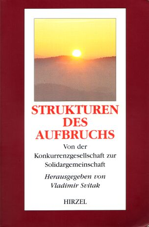

| Home | Inhaltsverzeichnis | Einleitung | Wege zum Frieden | Aufruf zur Zusammenarbeit | ||
|  Svitak, Vladimir (Hrsg.) Strukturen des Aufbruchs Von der Konkurrenzgesellschaft zur Solidargemeinschaft u.a. mit Beiträgen von Bernd Senf ISBN 3-7776-1112-3 2001. 206 S., 20 s/w Abb. Kartoniert. S. Hirzel Verlag Bestellen |
Die bisherigen Bemühungen, zentrale Weltprobleme zu lösen, sind in vielen Bereichen ohne den gewünschten Erfolg geblieben. Das vorliegende Buch verbindet konservative Wege mit visionären Neuerungen. Die Art des Querdenkens der Autoren ist nicht nur nützlich, sondern für jeden kreativen Prozess unverzichtbar. In den Beiträgen werden Strategien vorgestellt, die bis an die Wurzeln der Probleme gehen. Im Interesse der Gesundung von Gesellschaft und Natur wünschen die Unterzeichner, dass Unternehmer, Wissenschaftler, Politiker sowie die Bevölkerung im allgemeinen dem Buch Impulse entnehmen, die zur Lösung der Kernprobleme beitragen. | |
|
|
||
|
|
||
| Inhaltsverzeichnis | ||
| Vorworte | ||
| Gemeinsames Vorwort | ||
| E. v. Weizsäcker | Geleitwort | |
| V. Svitak | Warum dieses Buch entstand - und was es bringt | |
| 1. | Das Integrierte Erfolgs-System | |
| 1.1 | V. Svitak | Hauptprinzipien der Strategie |
| 1.1.1 | Respektieren der gesellschaftlichen Entwicklung nach dem Naturgesetz | |
| 1.1.2 | Eigennutz im Einklang mit dem Gemeinwohl | |
| 1.1.3 | Aus Schwächen Stärken machen | |
| 1.1.4 | Konzentration auf den Engpass | |
| 1.1.5 | Marktführung | |
| 1.1.6 | Kooperation statt selbermachen | |
| 1.1.7 | Nutzen bieten kontra Gewinnmaximierung | |
| 1.2 | Phasen der Strategie | |
| 1.2.1 | Praxisbeispiele der sieben Strategie-Schritte | |
| 1.2.2 | Zeit- und Zielplanung/ Autodynamische Bewusstseinslenkung | |
| 1.2.3 | Eigeninitiative und vernetztes Denken | |
| 1.3 | Erfolgsfaktoren für Menschen, Unternehmen, Politik und Natur | |
| 1.3.1 | Das integrierte Erfolgs-System | |
| 1.3.2 | Die Strategie | |
| 1.3.3 | Andere Ziele erfordern andere Informationen | |
| 1.3.4 | Vom Produktions- zum Innovationsuntemehmen | |
| 1.3.5 | Kooperationsstrategie - ein Praxisbeispiel | |
| 1.3.6 | Innovationsstrategie - Praxisbeispiel | |
| 1.3.7 | Optimale Lebensgestaltung | |
| 2. | Grundlagen zukunftsweisender Neuorientierung | |
| 2.1 | B.Senf | Vom Ursprung der Gewalt - die „Saharasia-These" von James DeMeo |
| 2.2 | V. Svitak | Von Vorurteilen zum neuen Denken |
| 2.3 | E. Häusser | Erfinder in Deutschland |
| 2.4 | G. Hilscher | Strukturelle Ignoranz |
| 2.5 | V. Svitak | Erneuerung der Demokratie |
| 2.5.1 | Kapitalismus und Sozialismus | |
| 2.5.2 | Die beiden strategischen Hauptziele (Kernprobleme) | |
| 2.6 | J. Heinrichs | Viergliederung der Demokratie als evolutionäre Synthese |
| 2.6.1 | Das Gegenteil von Mittelmaß | |
| 2.6.2 | Gesellschaft: ein System des Handelns | |
| 2.6.3 | Viergliederung des Sozialen: ein gestuftes System von Kompetenzen | |
| 2.6.4 | Synthese von direkter und repräsentativer Demokratie | |
| 2.6.5 |
Zur Grundwerte-Ebene: Integration statt Integralismus oder Wertrelativismus |
|
| 2.6.6 | „Freiheit des Geisteslebens" auf der kulturellen Ebene | |
| 2.6.7 | Ein neues Paradigma sozialer Bewegungen | |
| 2.6.8 |
Zusammenfassung: die Synthesen einer kommunikativen Gesellschaft |
|
| 3. | Das Geld- und Finanzsystem | |
| 3.1 | V. Svitak | Die Geldtheorie von Silvio Gesell zu Helmut Creutz |
| 3.2 | H. Creutz | Begriffe rund ums Geld |
| 3.3 | H. Creutz | Die Kassen sind leer - wo ist das Geld geblieben? |
| 3.3.1 | Wie kommt es zu dieser Ebbe in den öffentlichen Kassen? | |
| 3.3.2 | Erklärung liegt in der Verteilung | |
| 3.3.3 | Was sind die Folgen für den Staat | |
| 3.3.4 | Resümee | |
| 3.4 | H. Creutz | Die Optimierung des Geldkreislaufs |
| 3.4.1 | Was kann gegen die monetären Probleme unternommen werden | |
| 3.4.2 | Die Ursache des Dilemmas | |
| 3.4.3 | Wie kann man dem Geld Beine machen | |
| 3.5 | H. Creutz | Blühende Zeiten durch verstetigten Geldumlauf |
| 3.5.1 | Das Hochmittelalter | |
| 3.5.2 | Beispiele aus dem 20. Jahrhundert (Wunder von Wörgl) | |
| 3.6 | H. Creutz |
Die Hintergründe der wirtschaftlichen Instabilitäten in Abbildungen |
| 3.7 | E. Glötzl | Die kapitalismusbedingte Arbeitslosigkeit in alternden Volkswirtschaften |
| 3.7.1 | Warum Keynes? | |
| 3.7.2 | Die Auswirkungen des Phänomens von 1980 | |
| 3.7.3 |
Ursachentypen von Arbeitslosigkeit bzw. sinkenden Arbeitseinkommen |
|
| 3.7.4 | Maßnahmen gegen die konjunkturbedingte Arbeitslosigkeit (von der Symptombekämpfung zur Ursachenbekämpfung) | |
| 3.7.5 |
Ursache der kapitalismusbedingten Arbeitslosigkeit - Das ureigenste Ziel des Kapitalismus |
|
| 3.7.6 |
Maßnahmen gegen die kapitalismusbedingte Arbeitslosigkeit |
|
| 3.8 | Zinsen im Licht der Geschichte | |
| 3.8.1 | V. Svitak | Christliche und andere bedeutende Stimmen zum Zins |
| 3.8.2 | E. Glötzl | Katastrophen durch Verschuldung |
| 3.8.3 | H. Creutz | Hat der Zins auch mit Krieg und Frieden zu tun? |
| 3.8.4 | S. Gesell | Die Warnung von 1918 |
| 3.8.5 | B. Senf |
Währungsentwicklung und Währungskrisen in Deutschland(1914-1948) |
| 3.8.6 | B. Senf |
Die deutsch-deutsche Währungsunion als Lehrstück für den Euro |
| 3.8.7 | B. Senf | Die Europäische Währungsunion (Euro) |
| 4. | Gestaltung des Wandels/Zukunftsprogramm | |
| 4.1 | H. Creutz | Ein gerechtes, zukunftsfähiges Steuersystem |
| 4.1.1 | Der derzeitige Zustand | |
| 4.1.2 | Entwicklung einer Alternative | |
| 4.1.3 | Die neuen Steuerarten im Einzelnen | |
| 4.1.4 | Die Auswirkungen eines solchen Steuersystems | |
| 4.1.5 | Weitere Aspekte der Steuer-Umstellungen | |
| 4.2 | V. Svitak | Krisenfreie, friedliche Marktwirtschaft |
| 4.2.1 | Das neue Renten- und Sozialsystem | |
| 4.2.2 | Die höhere Entwicklungsstufe der Marktwirtschaft | |
| 4.2.3 | Wohlstand statt Umsatz | |
| 4.2.4 | Die ökologische Effizienzrevolution | |
| 4.2.5 | Ein neuer, humaner Wettbewerbsantrieb | |
| 4.2.6 | Rechtssicherheit | |
| 4.3. | V. Svitak | Die neue Kultur der Arbeit für alle |
| 4.4. | H. Lutz | Politik, Wirtschaft und Organisierte Kriminalität |
| 4.5. | V. Svitak | Bildung und Wissenschaft |
| 4.6. | Huber/Svitak | Gesundsein und natürliches Leben |
| 4.6.1. | Mensch und Gesellschaft | |
| 4.6.2. | Heillose Gesundheitspolitik und teure Medizin | |
| 4.6.3. | Gesundheitsförderung und gesunde Umweltbedingungen | |
| 4.6.4. | Gesellschaft und Wirtschaft | |
| 4.6.5. | Die Würde des Menschen kultivieren | |
| 4.6.6. | U. Bauhofer | Ayur-Veda-Medizin |
| 4.7. | V. Svitak | Kultur, Moral und Religion (Grafik) |
| 5. | Strategie-Synthese | |
| 5.1. | Svitak u.a | Die Rolle Deutschlands bei der Sicherung der Weltzukunft |
| 5.2. | V. Svitak | Sieben Phasen der Strategie |
| 5.2.1. | Problembewusstsein, Überblick, Veränderungswille | |
| 5.2.2. |
Konstruktive Ideen-Verbindung: Geld- und Demokratiereform |
|
| 5.2.3. | Die Erfolg versprechendsten Reformgruppen | |
| 5.2.4. | Vereinzelung durch Vernetzung überwinden | |
| 5.2.5. | Meinungsführerschaft nutzen und ausbauen | |
| 5.2.6. | Kooperation statt Konkurrenz der unterschiedlichen Begabungen | |
| 5.2.7. | Institutionelle Realisierung des Erfolgs-Systems | |
| Anhang | ||
|
Praktische Möglichkeiten an der Einführung der neuen Weltordnung mitzuwirken |
||
| Autorendaten | ||
| Quellennachweis 1. Teil | ||
| Quellennachweis 2. Teil | ||
|
von Vladimir Svitak Warum dieses Buch entstand - und was es
bringt 1.) Mein ganzes Leben im privaten sowie im unternehmerischen Bereich ist stark von Erfolgsstrategien geprägt. Da ich mithilfe der Erfolgsstrategien alle Tiefen meines Lebens überwinden und schließlich innerhalb von zehn Jahren ein weit größeres Vermögen erwirtschaften konnte als die meisten Bundesbürger im ganzen Leben, bin ich von der Wirkung dieser Strategien tief überzeugt. 2.) Nachdem ich fünf Bücher über Erfolgsstrategien geschrieben hatte, dämmerte mir, was das eigentliche Kernproblem ist, das die Welt bedroht. Ich betrachtete bisher das alte verkrustete Denken als Hauptproblem, aber dann brachten mich einige Vordenker und Forscher, allen voran Helmut Creutz und Bernd Senf, zu der Erkenntnis, dass es noch tiefer liegende Ursachen gesellschaftlicher und individueller Fehlentwicklungen und Zerstörungsprozesse gibt: die destruktive Dynamik des Zinssystems sowie die Blockierung einer wahren lebens- und liebesfähigen Entfaltung des Menschen. Wenn mich diese Erkenntnisse erst so spät „erleuchtet" haben, ist es kein Wunder, dass die breite Öffentlichkeit und die Politik Aufklärungsbedarf haben. Dies drängt mich, meine Erfahrungen weiterzugeben, um Wege zu Verbesserungen ebnen zu helfen. Zu Punkt 1: Uns Deutschen geht es relativ gut. Die Politik und die Welt stecken aber in einer tiefen Krise. Vielleicht kann meine Biographie zeigen, dass gute Strategien auch aus schier ausweglosen Situationen zum Erfolg verhelfen können. Ich wurde Ende 1925 als Sohn eines Kleinunternehmers im Sudetenland geboren. Mit 15 Jahren studierte ich bereits eine Erfolgsstrategie von Dale Carnegie, die noch heute ein Bestseller ist. Das Thema beschäftigte mich auch während meines Kriegsdienstes, und noch vor Kriegsende erarbeitete ich einen schriftlichen Plan für mein Leben nach dem Kriege, den ich bis zur Machtübernahme der Kommunisten in der CSR 1948 Schritt für Schritt realisierte. Auch später diente er mir als Leitfaden. Nach dem Krieg verloren meine Eltern alles. Ich selbst leitete bereits als 20-jähriger einen mittleren Industriebetrieb und wurde später Unternehmensdirektor eines CSR-Staatsunternehmens, als Parteiloser, weil das Unternehmen den Plan nur zu 65 Prozent erfüllte, so dass ich der einzige Bewerber war. Ich führte sofort ein erfolgsabhängiges Lohnsystem ein und motivierte die Abteilungsleiter, indem sie neben der Planerfüllung Pflichten und Rechte übertragen bekamen, fast wie freie Unternehmer. Dadurch gehörte das Unternehmen bald zu den besten und wurde oft ausgezeichnet. Nach sechs Jahren wurde ich wegen meiner „kapitalistischen" Führungsmethoden abgesetzt, gleichzeitig drohte mir ein Verfahren wegen „Missbrauch der Funktion eines öffentlichen Organs", worauf damals 5 - 10 Jahre Gefängnis standen. Es kam nie zu einer Anklage, aber ich lebte zwei Jahre in Angst. Erst im Prager Frühling wurde das Verfahren eingestellt, und ich konnte das Institut für Revision, Organisation und Führung gründen, das erstmals marktgerechte Managementmethoden in die marode CSSR-Wirtschaft einführte. Für die Regierung und den Vater der Wirtschaftsreform, Prof. Dr. Dr. Ota Sik, erarbeitete ich den Gesetzentwurf für die teilweise Privatisierung der Wirtschaft. Das Institut für Revision, Organisation und Führung entwickelte sich erfolgreich, auch noch nach dem Russeneinmarsch von 1968. Allerdings hat man 1969, als die ultrakommunistische Regierung eingesetzt wurde, meinen führenden Gesellschaftern, Universitäts-Professoren und anderen Persönlichkeiten die Mitarbeit im Institut verboten, meinen Gesetzentwurf für antisozialistisch und kapitalistisch erklärt und mir nach neunjähriger nebenberuflicher, erfolgreicher Absolvierung von zwei Studiengängen die Promotion 24 Stunden vor dem Festakt verweigert mit der Begründung, ich hätte die Universität für „mein" Institut missbraucht. Diese drei zeitgleichen haarsträubenden Maßnahmen, die nur in einer unmenschlichen Diktatur möglich waren, bewegten mich, Hals über Kopf in die Bundesrepublik zu flüchten, wo mir später die Promotions-Dokumente doch noch zugestellt wurden. Hier fing ich mit 44 Jahren zum zweiten Mal bei Null an. Bereits 1970 gründete ich mit Hilfe des ebenfalls emigrierten Vize-Ministerpräsidenten und Wirtschaftsministers der CSSR, Ota Sik, ein internationales Dienstleistungs- und Fertigungsunternehmen, das versuchte, die Ideen des Prager Frühlings unter westlichen Bedingungen umzusetzen. Wir hatten wirtschaftlich großen Erfolg, aber 1975, als unser größter Auftraggeber für zwei Hochhäuser Pleite ging, wurde unser junges Unternehmen mit in den Abgrund gerissen. Dabei verlor ich privat 200.000 DM und stand zum dritten Mal bei Null. So fing ich mit 50 wieder an, intensiv Erfolgsstrategien zu studieren. Diese halfen mir nach langer Vorbereitung ENERGOPLAN zu gründen, ein Beratungsunternehmen, das innerhalb von fünf Jahren zum größten seiner Art gedieh - mit 100 Gesellschaftern und 1500 Mitarbeitern. Mit ENERGOPLAN arbeiteten auch deutsche und französische Minister zusammen. Über die Erfolge strahlte das ZDF einen 45-minütigen Film aus. Ich erreichte fast alles, was ich mir erträumt hatte, und ging 1985 als Ehren-Vorstandsvorsitzender in den Ruhestand. 1990 sah ich für Osteuropa die Chance, bei der Einführung der Marktwirtschaft nicht nur offensichtliche Fehler des Kommunismus, sondern auch solche des Westens zu meiden. Deshalb stellte ich bis 1992 mein Strategiewissen als Ministerberater den ostdeutschen Ländern sowie der CSFR zur Verfügung. Damals haben mich zwei Prager Minister gebeten, westliche Erfolgsstrategien in Buchform zusammenzufassen. So schrieb ich für Osteuropa eine Trilogie, d. h. je ein Buch für den persönlichen, für den unternehmerischen und für den nationalen Erfolg. Beim dritten Buch wirkten 36 Ko-Autoren aus elf Nationen, z. B. Minister, Spitzenparlamentarier, Universitätspräsidenten, Kardinäle, Unternehmer und Gewerkschaftler mit. Unter ihnen war auch der Parlamentspräsident der CSFR, Alexander Dubcek, die Symbolfigur des Prager Frühlings. 1994 erschien mein Buch „Zukunft Deutschland". Als verbesserte zweite Auflage erschien 1997 die „Zukunfts-Strategie", an der 26 deutsche Ko-Autoren, u. a. auch Altbundeskanzler Schmidt, mitwirkten. Zu Punkt 2: Das Festhalten der Politik an alten Erfolgsmustern führte häufig zur falschen Beratung der osteuropäischen Länder. Deshalb wurde auch Erhaltenswertes zerstört, und es wachsen gerade dort die kapitalistischen Schwächen am schnellsten, z. B. in Russland Kriminalität und Ungerechtigkeit. Die Bürger der neuen Bundesländer spüren (zumindest unbewusst) am ehesten die Mängel unseres West-Systems, denn auch sie haben das ineffektive und unfreie, wenngleich eine gewisse soziale Sicherheit bietende Ost-System kennen gelernt. 1989 fieberten fast alle dem Westen entgegen. Nach zehn Jahren sind aber die meisten von der Entwicklung mit ihren wachsenden sozialen Gegensätzen enttäuscht. Während sich weltweit die krisenhaften Entwicklungen in vielen Bereichen unübersehbar zuspitzen, mangelt es noch an wirksamen Strategien zur Lösung der Probleme. Vielfach handelt es sich nur um ein mehr oder weniger hilfloses Kurieren an Symptomen. Um so weniger ist die Politik in der Lage, die zunehmend aufflammenden Kriege und größten Grausamkeiten zu verhindern, die bei rechtzeitiger und konsequenter Anwendung richtiger Strategien vermeidbar gewesen wären. Worauf es deshalb notwendig ankommt, ist eine um sich greifende Einsicht in die wesentlichen tieferen Ursachen der Krisen. Erst dadurch eröffnen sich zukunftsweisende Strategien und Wege zu ihrer Überwindung. Damit tatsächlich ein Umbruch erreicht wird, enthält dieses Buch eine Auswahl der bewährtesten Erfolgsstrategien. Es wurden die wichtigsten Erfolgsfaktoren aus verschiedenen Lebensbereichen, bezogen auf Menschen, Unternehmen, Politik und Natur, zu einem System vernetzt. Denn ohne persönlichen Erfolg gibt es keinen unternehmerischen und ohne diesen keinen gesellschaftlichen Erfolg. Andererseits schafft der gesellschaftliche Erfolg durch die Politik Rahmenbedingungen für den persönlichen wie den unternehmerischen Erfolg. Durch die richtige Anwendung der Erfolgsstrategien in allen Bereichen ergänzen und verstärken sich diese gegenseitig und ebnen den Übergang der Industriegesellschaft zur Informations- und Gesundheitsgesellschaft. Das Erfolgssystem verbindet konservative Werte mit bewährten Strategien und visionären Neuerungen. Damit sollen nicht die einzelnen „Krankheitssymptome" behandelt, sondern wesentliche Ursachen der unbefriedigenden Entwicklungen aufgezeigt und überwunden werden. Und zwar auf einem evolutionären, der natürlichen Entwicklung entsprechenden Weg. Dennoch wird es sich um tiefgreifende Veränderungen handeln, die eine Denk- und Effizienzrevolution hervorrufen. Die Marktwirtschaft, in der bisher die Kampf- und Konkurrenzstrategie überwog, muss auf eine höhere Entwicklungsstufe gebracht werden, in der der Eigennutz im Einklang mit dem Gemeinwohl steht. Das Erfolgssystem basiert auf einer gegenüber der Konkurrenzstrategie weit effektiveren Kooperationsstrategie, die durch Innovationsstrategie ergänzt wird. Die technischen Wissenschaften revolutionieren zunehmend den berauschenden Fortschritt. Demgegenüber gelingt es den Wirtscharts- und Politikwissenschaften bislang nicht, die bereits vorhandenen Erkenntnisse fruchtbar zu machen, die die gravierenden Weltprobleme lösen könnten, wie wachsende Arbeitslosigkeit, Kriege, Kriminalität, Terror, Korruption, Sekten- und Drogenabhängigkeit, Reformunwilligkeit sowie den Werteverfall, der die Menschen tatenlos zusehen lässt, wenn Verbrechen geschehen, und eine Politikverdrossenheit, die nur den Radikalen und Populisten nützt. In der jüngsten Zeit werden unübersehbar die zunehmenden Naturkatastrophen durch Klimaveränderungen, Gesundheitsgefährdung durch BSE, Fremdenhass bei der NPD, und kriminelles Profitstreben. Das alles hat gemeinsame Ursachen. Ein Kernproblem besteht in dem derzeitigen Geld- und Wirtschaftssystem, das zwingend dazu führt, dass die Gesamtheit der Geldvermögen und damit auch der Schulden systembedingt rascher wachsen muss als das Bruttosozialprodukt auf Dauer wachsen kann. Es gibt bisher keine gesellschaftlich und wirtschaftlich verträglichen Mechanismen, um das Schuldenwachstum zu verlangsamen, geschweige denn die Schulden wieder abzubauen. Die Geschichte lehrt uns, dass diese Entwicklungen nicht beliebig lange durchhaltbar sind und letztlich immer in eine gesellschaftliche Katastrophe wie Krieg, Wirtschaftsdepression oder Hyperinflation einmünden, weil dies die bisher einzigen Mechanismen sind, durch die die Guthaben und damit auch die Schulden wieder vernichtet werden können. Es ist die größte politische Herausforderung für das 21. Jahrhundert, das Geld- und Wirtschaftssystem so umzugestalten, dass solche Entwicklungen vermieden werden. Heute konzentrieren sich viele Staaten auf die drastische Kürzung der Staatsausgaben und auf den Abbau der Arbeitslosigkeit. Dieser Weg hat durch Rosskuren in einigen wenigen Ländern Teilerfolge gebracht, die aber die Löhne sinken ließen und nicht das Kernproblem lösen, so dass die Ungerechtigkeit und damit die Weltprobleme weiter wachsen. Denn die längst bewährte Grundregel der Erfolgsstrategien lautet: „Solange das Kernproblem nicht bewältigt wird, nützen andere Maßnahmen wenig. Sie verschlimmern eher die Lage, weil sie die Hauptlösung verzögern." Dies wird durch das Wachsen der Weltprobleme bestätigt. Demgegenüber hat die Praxis tausendfach bewiesen, dass, wenn das Kernproblem gelöst ist, sich alle anderen Probleme wie von selbst lösen oder ihre Lösung wesentlich erleichtert wird. Während die Ausgaben für die sozial Schwachen gekürzt werden, führt das heutige Zinssystem zu einem exponentiellen Wachstum der Geldvermögen und der Schulden - und damit auch zu einem entsprechenden Anwachsen der Zinslasten, durch die Wirtschaft und Gesellschaft unter immer größeren Leistungsdruck geraten. Weder die Schulden an sich noch die Arbeitslosigkeit sind das Kernproblem, sie sind nur Folgen eines ungerechten Systems.Schon seit Jahrtausenden bemüht sich die Menschheit, die Ungerechtigkeit zu überwinden. Das führte bereits einige Male zu Veränderungen der gesellschaftlichen Systeme. Die Kommunisten z. B. haben versucht, die Gerechtigkeit auf Kosten der Freiheit zu realisieren, während der Westen weitgehend umgekehrt verfährt. Es fehlt der goldene Mittelweg. Die Marktwirtschaft hat sich als ein effizientes System bewährt. Solange aber das ungerechte Geld- und Zinssystem herrscht, das zwangsläufig die Kluft zwischen Reich und Arm zunehmend vertieft, funktioniert die Marktwirtschaft mangelhaft, und die Welt nähert sich trotz Fortschritt dem Abgrund. Früher wirkte sich die Ungerechtigkeit nur auf die Menschen aus. Die Wunden, die man der Natur zufügte, konnte die Natur durch ihre Selbstheilungskräfte überwinden. Durch die jetzige Bevölkerungsexplosion und die überwältigende Technik wird der negative Einfluss der Menschheit auf die Natur so groß, dass die Wunden der Natur immer tiefer und zunehmend unheilbar werden. Deshalb nähern wir uns nicht nur einer gesellschaftlichen sondern auch einer Natur-Katastrophe. Die jüngsten Katastrophen-Opfer, z. B. in Italien und der Schweiz, zeigen uns, wohin wir verführt werden. Unser System züchtet heute eine junge Finanz-Elite, die rücksichtslos nur den Gewinn sieht und die erfahrenen Manager bevormundet. Es deformiert die Natur und die Menschheit, vielen, vor allem Jugendlichen, nimmt es den inneren Halt. Das ungezügelte Profit- und Machtstreben verhindert auf unterschiedlichsten Gebieten bahnbrechende, zukunftsweisende Innovationen, wodurch der Gesundungsprozess blockiert wird. Konzerne fusionieren, und das Großkapital verdrängt zunehmend den lebensnotwendigen Mittelstand, zunächst am stärksten im Handel. Damit kann es eine Monopolstellung erreichen, die ihm ermöglichen wird, die ganze Menschheit zu manipulieren._. Nicht nur der Nobelpreisträger Günter Grass sieht klar, dass schon heute eher das Großkapital als die Demokratie regiert. Denn die mangelhaften Strukturen unserer Demokratie, die seit ihrer Entstehung vor rund 200 Jahren kaum weiterentwickelt wurden, sind nicht in der Lage, die Wurzeln der Ungerechtigkeit und Gewalt zu beseitigen. Dies erkannte ich gerade während der Arbeit an diesem Buch als ein weiteres Welt-Kernproblem, das eine unlösbare Einheit mit dem Geldproblem bildet. Im 2. Kap. wird deshalb eine effektivere Entwicklungsstufe der Demokratie dargestellt. Das jetzige System unterdrückt vor allem Reformen, die ein gerechtes Steuersystem einführen möchten. Z. B. James Tobin, der 1981 Nobelpreisträger wurde, hat schon 1972 die Besteuerung der spekulativen Devisen-Transaktionen vorgeschlagen. 1995 haben internationale Finanzexperten, die Professoren Peter Kenen, Jeffry Franken und Barry Eichengreen, eine fundierte Studie über die mögliche Besteuerung der Spekulanten vorgelegt. Dennoch werden weiterhin vor allem nur die Arbeitseinkommen besteuert, und die Spekulationsgewinne wachsen ins Unermessliche. Dafür hungern 1,8 Milliarden Menschen, und am Hunger sterben mehr Menschen als durch die zunehmenden Kriege. Hunger und Kriege sind also neben der Naturzerstörung die markanten Folgen unseres Weltsystems. Das heutige anonyme System der ungezügelten Freiheit, das uns als human erscheint, ist in Wirklichkeit viel gefährlicher als brutale Diktaturen, denn es macht uns auf einem Auge blind, so dass wir nur Erfolge sehen;
Es ist also höchste Zeit, dass das Volk die Politik drängt, ihre bereits geschwächte, aber immer noch vorhandene Machtstellung für eine Gesundung der Gesellschaft zu nutzen. Wir spüren es alle, dass es so nicht weiter gehen kann, und wünschen uns tiefgreifende Verbesserungen. Damit hat vor allem die deutsche Regierung eine historische Chance, den Gesundungsprozess in Gang zu setzen. Ihr Weg geht in die richtige Richtung, dennoch ist er falsch, weil er die Ungerechtigkeit und das Demokratieproblem nicht bei der Wurzel packt. Die Wahlniederlagen von 1999 verdeutlichen es. Dabei wäre es zum Erfolg nur ein kleiner Schritt, wenn man das Geldwesen als das Kernproblem, als die Wurzel der Ungerechtigkeit erkennen und entsprechend handeln würde. Denn es wäre nur eine Geldgebühr einzuführen. Diese kleine Einwirkung, die reiche Spekulanten trifft, hätte eine große Auswirkung. Sie bewirkte eine Initialzündung, die den überfälligen Gesundungsprozess von Wirtschaft und Gesellschaft überhaupt erst möglich macht. Außerdem würden die unglaublichen Zinsanteile fast verschwinden, die wir heute bei jedem Kauf von Konsumgütern unsichtbar und unbewusst mitbezahlen und deren Anteil in den Preisen im Durchschnitt auf über ein Drittel geschätzt wird. Es handelt sich dabei um Zinsanteile, die die Produzenten von Gütern und Dienstleistungen der Bank zahlen müssen, um Maschinen, Gebäude usw. anzuschaffen. Diese unsichtbaren Zinslasten sind so hoch, dass sie nur bei den reichsten 15 % der Einkommensbezieher durch deren Zinserträge übertroffen werden. Die anderen 85 % zahlen beim Zinssystem drauf. Das neue System würde für circa 85 % der Bevölkerung erhebliche Vorteile bringen. Nur für die ganz reichen 15 % wäre das auf Zinseszins bzw.Spekulation aufgebaute weitere Wachstum ihres Vermögens unterbunden. Langfristig würde es aber auch ihnen nützen, denn sie hätten kaum Inflationsverluste, und es bewahrt ihr Vermögen sowie die Gesellschaft vor der Katastrophe und Vernichtung und lässt sie eine menschenfreundlichere Welt sorg- und stressloser genießen. Ausschlaggebend ist die Schaffung von wirtschaftlichen Rahmenbedingungen, die Fehlverhalten der Menschen einschließlich Steuerhinterziehungen verhindern und zu mehr Kreativität und Effektivität anregen. Vom Einzelnen wird größere Eigenverantwortung verlangt, aber es wird gleichzeitig mehr Lebenssinn und Geborgenheit gewonnen. Persönlicher und unternehmerischer Erfolg sowie familiäres Glück werden in höherem Maße zur Zukunftssicherung beitragen. Eine liebevolle, motivierende, lebens- und praxisnahe Erziehung, bei Vermeidung der Gewaltverherrlichung, wird zu besseren zwischenmenschlichen Beziehungen führen. Ein vorbeugendes Gesundheitswesen zusammen mit gesünderen Lebensbedingungen wird die persönliche Gesundheit verbessern und dadurch Kosten sparen helfen. Die positive Wirkung der Kirchen wird gestärkt werden und sich mit weltlicher Wissenschaft zur gegenseitigen Befruchtung verbinden. Die Gewerkschaften werden auf neuen Wegen ihren Einfluss vergrößern können. Das alles wird eine krisenfreie Marktwirtschaft hervorbringen, die neben Gewinn einen humanen und kooperativen Wettbewerbsantrieb erhält. Auf lange Sicht könnten durch das neue Geld- und Steuersystem sowie durch die Verminderung des Zinsanteils in den Preisen die meisten Menschen ihren Lebensstandard verdoppeln und/oder ihre Arbeitszeit drastisch reduzieren. Es würden Werte wie Rücksicht, Toleranz, Zuverlässigkeit, Hilfs- und Opferbereitschaft, Redlichkeit, Schaffens- und Lebensfreude wieder an Gewicht gewinnen und soziale Konflikte deutlich entschärft. Das neue System kann die gesamte Menschheit heilen
helfen, sobald es weltweit eingeführt wird. Die Realisierung sollte
sachlich wie regional stufenweise geschehen, wobei Deutschland die
besten Voraussetzungen zum Vorreiter hat, zumal dieses umfassende
Konzept hier entwickelt wurde. Wenn die deutsche Regierung dieses
Konzept aufgreifen würde, hätte sie eine zukunftsfähige, visionäre
Grundlage, auf der sich solide konservative Bewahrer mit mutigen
Erneuerern zu Befürwortern und Mitstreitern verbinden. |
||
|
Die heutige Weltsituation ähnelt der von 1929, kurz vor der Weltwirtschaftskrise, die zum Zweiten Weltkrieg führte. Damals haben Reformer (Bürgermeister und Pfarrer) in einigen Regionen Europas durch eine neue Natürliche Wirtschaftsordnung die Arbeitslosigkeit spektakulär reduziert. Aber die Mächtigen haben das heilende System verboten und Hitler ließen sie groß werden. Inzwischen wurde das damalige Reform-System in vielen Büchern modernisiert. Unser herrschendes Weltsystem will es dennoch nicht zur Kenntnis nehmen, obwohl die heutigen Probleme unvergleichlich drängender sind. Das zentralste Kernproblem liegt im alten, anerzogenem, kurzsichtigen Konkurrenzdenken, das uns die tiefliegenden Wurzeln der Gewalt und Ungerechtigkeit nicht erkennen läßt. Es fehlt das Wissen, dass der Mensch ursprünglich ein gewaltfreies, friedliches, ja liebevolles Geschöpf war. Es fehlt auch das Naturgesetze respektierende Denken, das hauptsächlich nur Techniker beherrschen, die den berauschenden Fortschritt ermöglichen. Dagegen Ökonomen und Politiker denken falsch, denn sie wollen z.B. die Arbeit verbilligen, aber durch die Lohnsteuer machen sie sie teuer, statt nur die knappen Ressourcen zu besteuern. Sie sehen nicht, das unser Geld- und Wirtschaftsystem zwingend dazu führt, dass die Gesamtheit der Geldvermögen und damit auch der Schulden systembedingt rascher wachsen muß als das Bruttosozialprodukt wachsen kann, und das dies bisher immer in eine gesellschaftliche Katastrophe, wie Krieg oder Hyperinflation führte. Die Arbeitslosigkeit und Staatsverschuldung sind also Folgen unseres ungerechten Systems, das auch eine effektive Weiterentwicklung der Demokratie unterdrückt. Die Menschheit braucht Liebe und ein auf Naturgesetzen bauendes, weitsichtiges Denken mit einer grundsätzlich neuen sozialen Verhaltensweise. Liebe, Hoffnung, Glaube und das Denken machen den Menschen zum höchsten Geschöpf der Natur. Liebe ist der Ausdruck der Menschlichkeit, die auch die Kraft zur Vergebung gibt. Liebe benötigt allerdings Pflege. Sie braucht Geborgenheit und ein Wissen, das positive Kreativität, Toleranz und Harmonie ermöglicht. Wir müssen den kurzsichtigen Egoismus durch wahre Menschlichkeit, Liebe, bessere Ideen und wirkliche Demokratie ersetzen. Durch die einzigartige Gabe des Denkens, kann der Mensch seine Entwicklung, bis zu einem gewissen Grade selbst beeinflussen. Im positiven oder negativen Sinne. Am meisten wird er beeinflußt durch Erziehung, Vorbilder und das Umfeld. Deshalb ist es von zentraler Bedeutung, dass das herrschende System positive Signale ausstrahlt, und die Nächsten- und Naturliebe, sowie das Miteinander fördert. Und nicht wie heute die Menschheit zum Egoismus, Abgestumpftheit und Gewalt führt. Für dieses neue Umdenken bietet die 100.000-fach erprobte EKS-Strategie die erforderliche Grundlage. (EKS = Evolutionskonforme, bzw. Energokybernetische Strategie) Sie ermöglicht ein gegenseitig sich förderndes Miteinander, das den Eigennutz mit dem Gemeinwohl verbindet. Oberstes Ziel ist nicht mehr der eigene Gewinn, sondern der größtmögliche Nutzen für die Zielgruppe, bzw. für die Mitwelt. Denn dann kommen die Anerkennung, Umsatz und Gewinn von selbst. Mit der EKS-Strategie erreichten bereits unglaublich viele Unternehmer einen erstaunlichen, z.T. weltweiten Erfolg, weil das neue natürliche und kooperative Denken erfolgreicher ist als das egoistische und zerstörerische Konkurrenzdenken. Durch neues Miteinander zurück zu natürlichen Wurzeln und zum ersehnten Erfolg Das neue Denken braucht zunächst die Reformbewegung, die sich national oder international engagiert für Demokratie, Geld, Umwelt, Gesundheit, Soziales, Kultur, Religion, Arbeitslose, Alte, Nichtwähler, Mittelstand, Gewerkschaften usw. Die meisten sind noch dem alten Konkurrenzdenken verhaftet und glauben, dass ihr Programm das einzig heilende ist. Aber um den erwünschten Erfolg zu erreichen, müssen sie gemeinsam vier Aufgaben erfüllen: 1. ihr Wissen und ihre Ziele untereinander austauschen und sich
gegenseitig befruchten; Für die Lösung der
Kernprobleme, haben bereits viele Reformer mit dem neuen Denken zukunftsfähige
Modelle entwickelt. Sie müssen aber
durch die Bündelung und die Unterstützung von vielen
Reformorganisationen mehr Gewicht bekommen.
Das neue
Wirtschaftsmodell soll sich nur
auf die zentralen Kernprobleme konzentrieren damit es kürzer und leichter
verständlich wird. Zumal Lösungen aller anderen wichtigen Probleme von
der Lösung der zentralen Kernprobleme abhängen. Wenn die vier genannten Aufgaben erfüllt sind, wird das neue Wirtschaftsmodell auch von der Avantgarde der Gesellschaft, den Künstlern und Medien voll unterstützt und zu einer Aufbruchstimmung, bzw. friedlicher Revolution führen, ähnlich wie sie z.B. bei der Wiedervereinigung Deutschlands das ganze Volk beflügelt hat. Heute geht es allerdings um noch mehr, um die Verwirklichung dessen, was wir beim Niedergang des Kommunismus erwartet haben, nämlich um Gerechtigkeit und Frieden, was bisher z.B. Jesus, sowie viele blutige Revolutionen nicht geschafft haben. Die heutige
globale Beschleunigungskrise läßt uns nur wenige Jahre Zeit,
um das Schlimmste zu verhindern. Ein fähiges Team müßte in drei Jahren es schaffen die Reformbewegung zur gegenseitigen Kooperation zu bewegen, das
Gesellschaftsmodell zu bündeln, und mit der
Umsetzung zu beginnen, zumal
viele Vorarbeiten schon geleistet wurden (siehe ganz unten angeführte
Unterlagen). Das Gesamtmodell mit einer effektiveren Demokratie wird durch das gerechte, einfache und dienende Steuer- und Geldsystem die Arbeitslosigkeit abbauen, die Natur schonen, die Kultur vom Profitzwang befreien und. ein besseres Erziehungs-, Gesundheits- und Sozialsystem ermöglichen. Dies alles wird den Humusboden der Kriminalität, der Gewalt, des Terrors, der Steuerhinterziehung austrocknen, Schwarzarbeit abschaffen, sowie mehr Sicherheit und Menschlichkeit bringen. Diese Wende, bei der sich einzelne Maßnahmen gegenseitig ergänzen und verstärken, konservative Werte mit visionären Neuerungen verbinden, wird neue Standards schaffen, die weniger Bürokratie, dafür mehr Effektivität und Gerechtigkeit sichern. Wirtschaft und Gesellschaft werden durch die krisenfreie Marktwirtschaft mit dem humanen Wettbewerbsantrieb wesentlich effektiver und Menschen und Natur gesünder. Außerdem wird der Gestaltungsspielraum der Politik durch Schuldenabbau erweitert, so dass für alle endlich Gerechtigkeit, Nächsten- und Naturliebe, Selbstverantwortung und Hilfsbereitschaft in einem friedlichen Miteinander herrschen können. Die Familie und der Staat werden wieder als Vorbild dienen. Das
neue System stellt die bisher größte Herausforderung dar. Es ist
aber leichter einzuführen
als man glaubt. Weil es erstmals
in der Geschichte die Probleme bei den Wurzeln löst, bringen kleine
Einwirkungen große Auswirkungen. Es wird Vorteile schaffen, auch wenn es
nur in Deutschland und zunächst nur teilweise eingeführt wird. Die
Erfolge werden andere Staaten folgen lassen.
Die Bevölkerungsmehrheit sehnt sich nach Gerechtigkeit, Naturschonung
und Frieden und wird nach der zunehmenden Politikverdrossenheit begeistert
sein, wenn sie dazu beitragen
kann, nicht nur Deutschlands Probleme friedlich
zu lösen, sondern eine neue wirklich demokratische Weltära einzuleiten, auf
die die Menschheit Jahrtausende wartet. Diese Gedanken sind entnommen aus dem Buch „ STRUKTUREN DES AUFBRUCHS – Von der Konkurrenzgesellschaft zur Solidargemeinschaft“ das als Grundlage für die Initiative Welt-Zukunfts-Rat des Stifters des Alternativen Nobelpreises dient. Eine 16seitige Kurzfassung unter dem Titel „Die Denk- und Effektivitätsrevolution“, zu der Österreichs Vizekanzler a.D. Dr. Erhard Busek, Präsident des Europäischen Forums Alpbach das Geleitwort schrieb, kann angefordert werden bei E-mail: gesellschaftsordnung@web.de
|
||
|
Erst wenn diese zwei Aufgaben erfüllt sind, kann m.E. das neue Wirtschaftsmodell auch von der Avantgarde der Gesellschaft, den Künstlern und Medien unterstützt werden und zu einer Aufbruchstimmung führen, ähnlich wie sie z.B bei der Wiedervereinigung Deutschlands das ganze Volk beflügelt hat. Heute geht es allerdings um noch mehr, um die Verwirklichung dessen, was wir beim Niedergang des Kommunismus erwartet haben, nämlich um Gerechtigkeit, Frieden sowie Nächsten- und Naturliebe, was bisher viele blutige Revolutionen nicht geschafft haben. Dieses Vorhaben will ich
anstoßen und reserviere bis 30.6.05
für ein Team 25.000 €
als Spende. Außerdem stelle ich
kostenlos ca. 2.400
Exemplare meines Buches „Strukturen des Aufbruchs“
zur Verfügung, die zum Sonderpreis von 7,90€ verkauft werden dürfen,
und einen Erlös von weiteren
18.960€ bringen können. Das Buch, dass Reformmodelle von
vielen Autoren bereits bündelt, sowie die neu überarbeitete 16seitige
Kurzfassung „Die Denk- und Effektivitätsrevolution“, sollen für
dieses Vorhaben als
Grundlage dienen, ohne Anspruch auf Vollkommenheit zu erheben. Geleitwort der „Denk- und
Effektivitätsrevolution“ Österreichs
Vizekanzler a.D. Dr.Erhard Busek, Präsident des Europäischen Forums
Alpbach |
||
|
|
||
Home | Inhaltsverzeichnis | Einleitung | Wege zum Frieden | Aufruf zur Zusammenarbeit | <<<<<
Version: 22.05.08 15:24:54